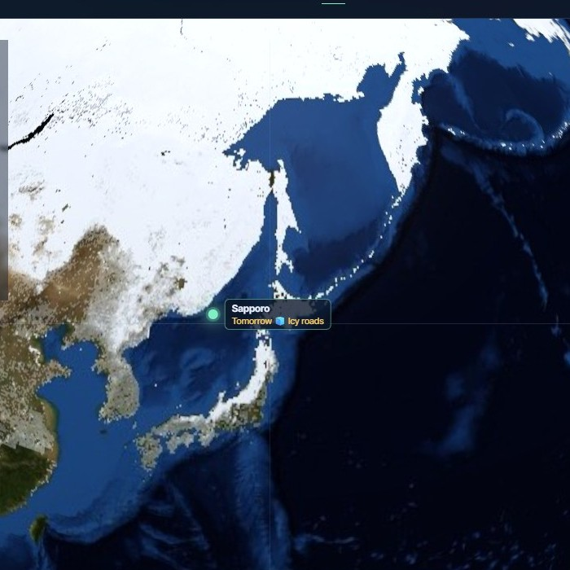

Snow Trend Detective
Logo: AI-assisted (SVG generated with Claude)
NASA Space Apps Challenge 2026 · Be An Earth System Trend Detective
My Town
Snow-Quality Chart
Is Hokkaido's light, dry snow turning into heavy, wet snow?
Team Snow Trend Detective — Kim Dohyun (solo)
Sapporo local event · online from South Korea
NASA POWER · NASA MODIS · NASA Blue Marble · JAXA GSMaP · Japan Meteorological Agency
1 / 7hitori839.github.io/snow-trend-detective